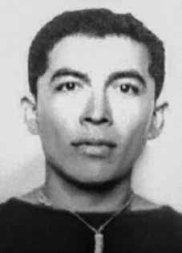

Antônio
de Pádua
Costa
CIRCUNSTÂNCIAS DA MORTE
Segundo o Relatório Arroyo, Antônio de Pádua Costa “Piauí” esteve no tiroteio acontecido no dia 14 de janeiro de 1974, juntamente com Beto e Antônio “Alfaiate” quando, depois de colherem mandiocas para uma refeição, foram perseguidos por militares. Depois disso, não foi mais visto por seus companheiros.
Nos relatórios da Aeronáutica e do Exército não há informações sobre sua morte. Entretanto, no Relatório da Marinha, entregue ao ministro da Justiça, Maurício Corrêa, em 1993, Antônio de Pádua é listado como participante da Guerrilha do Araguaia, morto em 5 de março de 1974. Em depoimento prestado ao Ministério Público Federal, em 3 de julho de 2001, José Moraes Silva afirmou que viu “Piauí” sendo conduzido por soldados do Exército.
Ainda, Pedro Moraes da Silva, em depoimento ao Ministério Público Federal em 4 de julho de 2001, afirmou que, juntamente com Paulo Fontelles Filho e Sinvaldo, estiveram na casa de “Pexim” e que sua esposa, dona Raimunda, os mostrou uma foto que teria caído da mochila de um soldado do Exército e que nessa foto “Piauí”, amarrado, foi reconhecido. Em outro depoimento ao Ministério Público Federal em 6 de julho de 2001, José Francisco Dionísio, afirmou que “Piauí” chegou a São Domingos do Araguaia a pé, conduzido por soldados do Exército, após ter sido preso por Antônio Almeida, um morador local.
Adalgisa Moraes da Silva, em depoimento ao Ministério Público Federal em 6 de julho de 2001, afirmou que viu “Piauí” junto com o filho de dona Joana, presos em São Domingos, tendo sido levado a pé por soldados do Exército para a prisão da Bacaba. Manuel Leal Lima, em depoimento ao MPF no dia 12 de julho de 2001, contou que chegou a ver “Piauí” preso (junto com Duda e Pedro “Carretel”) e que fora transformado em guia e morto na Bacaba ao final da guerrilha. Ainda, Raimundo Nonato dos Santos, em depoimento ao MPF no dia 14 de julho de 2001, disse que “Piauí” foi preso e forçado a andar com o Exército como guia, mas apenas mostrou lugares vazios. Afirmou ainda que nas primeiras missões, “Piauí” andava e dormia amarrado, mas que passou a ficar solto por influência da depoente, mas que, depois da quinta missão, “Piauí” não foi levado e depois disso, nunca mais ninguém falou sobre ele.
Em 2012, o Ministério Público Federal denunciou Sebastião de Moura Rodrigues, o “Curió”, por ter promovido, mediante sequestro, a privação permanente da liberdade de Antônio de Pádua Costa, Maria Célia Corrêa, Hélio Luiz Navarro de Magalhães, Daniel Ribeiro Callado e Telma Regina Cordeiro Corrêa. Segundo o órgão ministerial, “Curió” atuou na condição de comandante operacional da Operação Marajoara, tendo ordenado e participado do sequestro dos guerrilheiros, aos quais impôs grave sofrimento físico ou moral por meio de maus tratos.
According to the Arroyo Report, Antônio de Pádua Costa “Piauí” was at the shooting that took place on January 14, 1974, together with Beto and Antônio “Alfaiate” when, after harvesting cassava for a meal, they were chased by soldiers. After that, he was no longer seen by his companions.
In the Air Force and Army reports there is no information about his death. However, in the Navy Report, delivered to the Minister of Justice, Maurício Corrêa, in 1993, Antônio de Pádua is listed as a participant in the Araguaia Guerrilla, killed on March 5, 1974. In a statement given to the Federal Public Ministry, on July 3, 2001, José Moraes Silva stated that he saw “Piauí” being driven by Army soldiers.
Furthermore, Pedro Moraes da Silva, in a statement to the Federal Public Ministry on July 4, 2001, stated that, together with Paulo Fontelles Filho and Sinvaldo, they were at “Pexim”'s house and that his wife, Dona Raimunda, showed them a photo that had fallen from an Army soldier's backpack and that in that photo “Piauí”, tied up, was recognized. In another statement to the Federal Public Ministry on July 6, 2001, José Francisco Dionísio stated that “Piauí” arrived in São Domingos do Araguaia on foot, led by Army soldiers, after being arrested by Antônio Almeida, a local resident.
Adalgisa Moraes da Silva, in a statement to the Federal Public Ministry on July 6, 2001, stated that she saw “Piauí” together with Dona Joana's son, arrested in São Domingos, having been taken on foot by Army soldiers to the Bacaba prison. Manuel Leal Lima, in a statement to the MPF on July 12, 2001, said that he saw “Piauí” arrested (along with Duda and Pedro “Carretel”) and that he was transformed into a guide and killed in Bacaba at the end of the guerrilla. Furthermore, Raimundo Nonato dos Santos, in a statement to the MPF on July 14, 2001, said that “Piauí” was arrested and forced to travel with the Army as a guide, but only showed empty seats. He also stated that in the first missions, “Piauí” walked and slept tied up, but that he became free due to the influence of the interviewee, but that, after the fifth mission, “Piauí” was not taken and after that, no one ever spoke about him again.
In 2012, the Federal Public Ministry denounced Sebastião de Moura Rodrigues, the “Curió”, for having promoted, through kidnapping, the permanent deprivation of liberty of Antônio de Pádua Costa, Maria Célia Corrêa, Hélio Luiz Navarro de Magalhães, Daniel Ribeiro Callado and Telma Regina Cordeiro Corrêa. According to the ministerial body, “Curió” acted as operational commander of Operation Marajoara, having ordered and participated in the kidnapping of the guerrillas, to whom he imposed serious physical or moral suffering through mistreatment.
Según el Informe Arroyo, Antônio de Pádua Costa “Piauí” se encontraba en el tiroteo ocurrido el 14 de enero de 1974, junto con Beto y Antônio “Alfaiate” cuando, después de cosechar yuca para comer, fueron perseguidos por militares. Después de eso, sus compañeros ya no lo vieron.
En los informes de la Fuerza Aérea y del Ejército no hay información sobre su muerte. Sin embargo, en el Informe de la Marina, entregado al Ministro de Justicia, Maurício Corrêa, en 1993, Antônio de Pádua figura como participante de la Guerrilla de Araguaia, asesinado el 5 de marzo de 1974. En declaración dada al Ministerio Público Federal, el 3 de julio de 2001, José Moraes Silva afirmó haber visto a “Piauí” siendo conducido por soldados del Ejército.
Además, Pedro Moraes da Silva, en declaración al Ministerio Público Federal el 4 de julio de 2001, afirmó que, junto con Paulo Fontelles Filho y Sinvaldo, se encontraban en la casa de “Pexim” y que su esposa, doña Raimunda, les mostró una foto que se había caído de la mochila de un soldado del Ejército y que en esa foto se reconocía a “Piauí”, atado. En otra declaración ante el Ministerio Público Federal el 6 de julio de 2001, José Francisco Dionísio afirmó que “Piauí” llegó a São Domingos do Araguaia a pie, guiado por soldados del Ejército, luego de ser detenido por Antônio Almeida, vecino de la zona.
Adalgisa Moraes da Silva, en declaración al Ministerio Público Federal el 6 de julio de 2001, afirmó haber visto a “Piauí” junto con el hijo de Doña Joana, detenidos en São Domingos, siendo conducidos a pie por soldados del Ejército a la prisión de Bacaba. Manuel Leal Lima, en declaración al MPF el 12 de julio de 2001, dijo que vio detenido a “Piauí” (junto con Duda y Pedro “Carretel”) y que fue transformado en guía y asesinado en Bacaba al final de la guerrilla. Además, Raimundo Nonato dos Santos, en declaración al MPF el 14 de julio de 2001, dijo que “Piauí” fue detenido y obligado a viajar con el Ejército como guía, pero sólo mostró asientos vacíos. También afirmó que en las primeras misiones “Piauí” caminaba y dormía atado, pero que quedó libre por influencia del entrevistado, pero que, después de la quinta misión, “Piauí” no fue llevado y después de eso nadie volvió a hablar de él.
En 2012, el Ministerio Público Federal denunció a Sebastião de Moura Rodrigues, el “Curió”, por haber promovido, mediante secuestro, la privación permanente de libertad de Antônio de Pádua Costa, Maria Célia Corrêa, Hélio Luiz Navarro de Magalhães, Daniel Ribeiro Callado y Telma Regina Cordeiro Corrêa. Según el órgano ministerial, “Curió” actuó como comandante operativo de la Operación Marajoara, habiendo ordenado y participado en el secuestro de los guerrilleros, a quienes impuso graves sufrimientos físicos o morales mediante malos tratos.